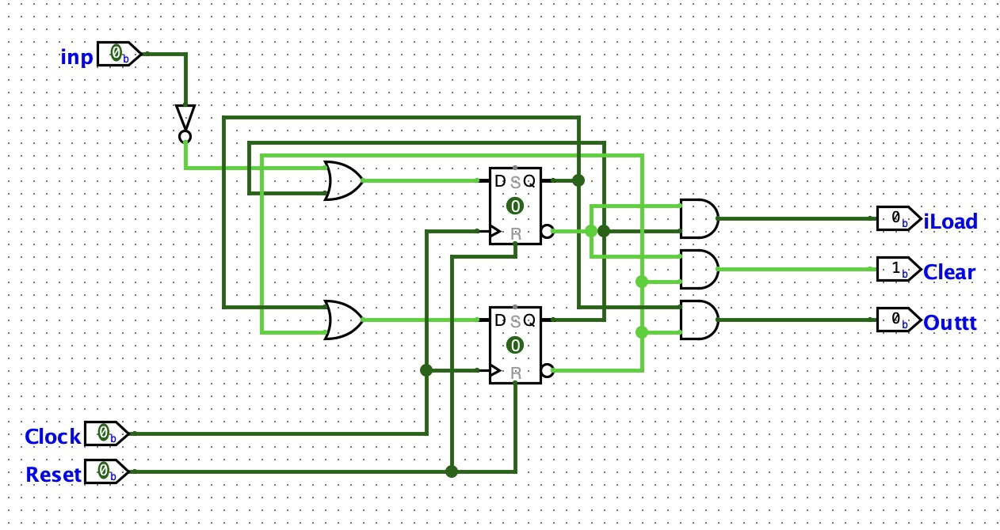
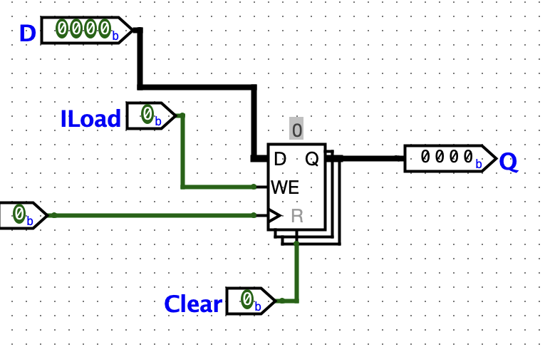
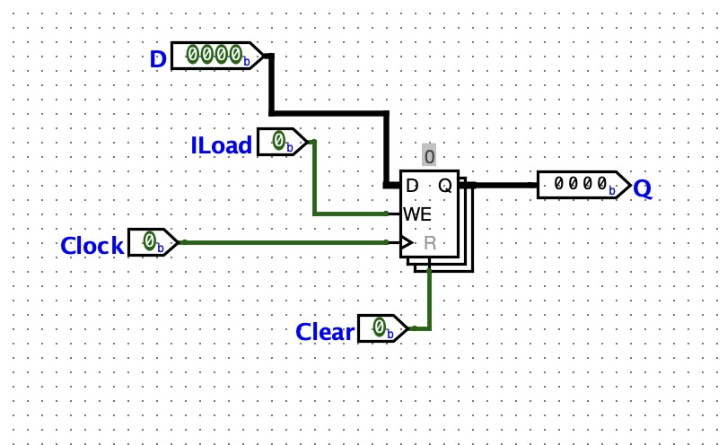
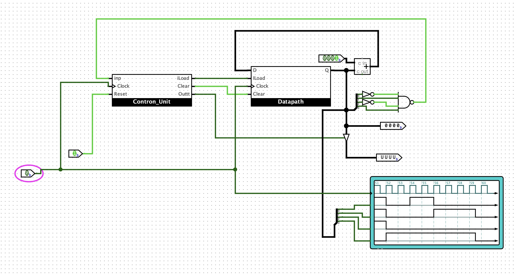
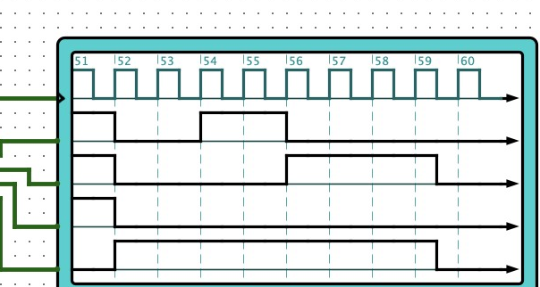

(Sum n down to 1)
ด้วยโปรแกรม Logisim-Evolution
ระบบการออกแบบหน่วยประมวลผลขนาดเล็กแบบแยกส่วนควบคุม (Control Unit) และส่วนการไหลของข้อมูล (Datapath) ที่ทำงานร่วมกับ Register File และ ALU 8 bit
| 1 | นายดรัณภพ พิทักษ์กิจไพศาล | 6710301007 |
| 2 | นายอภิสักก์ คงภักดี | 6710301009 |
| 3 | นายธนัท จงธีรธนโชติ | 6710301032 |
การเขียนโปรแกรมเพื่อคำนวณผลรวมสะสมจากค่า n ลงมาถึง 1 เช่น (5 + 4 + 3 + 2 + 1 = 15) เป็น Function พื้นฐานที่มักจะใช้วิธีวนลูป (Loop) ในระดับ Software แต่สำหรับระบบ Computer และระบบสมองกลฝังตัว (Embedded System) เราสามารถสร้างกลไกการคำนวณนี้ขึ้นมาได้ด้วยวงจร Hardware จำลอง โดยเชื่อมต่อส่วนประมวลผลและหน่วยความจำเข้าด้วยกัน ซึ่งจะช่วยให้เข้าใจสถาปัตยกรรม Computer และกลไกการทำงานในระดับ Hardware ได้อย่างลึกซึ้ง
รายงานฉบับนี้เสนอผลการออกแบบและสร้างวงจรคำนวณผลรวมสะสม n ถึง 1 (Sum n down to 1) ขนาด 8 bit บนโปรแกรม Logisim-Evolution โดยจัดโครงสร้างแบบแยกส่วนควบคุม (Control Unit) และส่วนข้อมูล (Datapath) ที่ทำงานสอดประสานกันตามสัญญาณนาฬิกา (Synchronous Clock) ผ่านทาง Register File และหน่วยคำนวณและตรรกะ (ALU)
การทดลองนี้จะช่วยให้เข้าใจกลไกการทำงานของหน่วยประมวลผลจริง ทั้งการจัดการ Data Bus การส่งสัญญาณควบคุมจาก FSM (Finite State Machine) การอ่านเขียน Register ตลอดจนการส่งผลลัพธ์ออกทาง Output พินเมื่อคำนวณเสร็จสิ้น
Logisim-Evolution v4.1.0 — โปรแกรมสำหรับออกแบบและทดสอบวงจร Logic ซึ่งในโปรเจกต์นี้ใช้ในการสร้างสถาปัตยกรรมหน่วยประมวลผลย่อย ๆ และวิเคราะห์กราฟสัญญาณเวลา
| อุปกรณ์ / โมดูล | หน้าที่ในวงจร |
|---|---|
| Control Unit (FSM) | ควบคุมการทำงานในแต่ละ State สร้างสัญญาณควบคุมสั่งงาน Datapath และส่งสัญญาณแจ้งเตือนเมื่อคำนวณเสร็จสิ้น |
| Register File (Four_Bit_RF) | หน่วยความจำขนาด 8 bit จำนวน 4 Register (R0-R3) รองรับการอ่านและเขียนข้อมูลพร้อมกัน |
| ALU (Arithmetic Logic Unit) | หน่วยประมวลผลคำนวณ รองรับการบวกค่าตัวเลขสะสม (ADD) และลดค่าตัวนับลงทีละหนึ่ง (DEC) |
| Multiplexer 8 bit | สลับสัญญาณขาเข้าของ Register File ระหว่างค่าเริ่มต้นของข้อมูล Input กับค่าคำนวณใหม่จาก ALU |
| Controlled Buffer | เป็น Tri-State Buffer ที่ทำหน้าที่เปิดและส่งข้อมูล Output สะสมออกสู่ภายนอกเมื่อ Done สิ้นสุดลง |
| Clock & Start / Reset Pins | ปุ่ม Input รับสัญญาณควบคุมจังหวะและคำสั่งการเริ่มต้นและการล้างระบบวงจรจากภายนอก |
โครงสร้างวงจรนี้ออกแบบเป็นระบบคำนวณขนาด 8 bit เพื่อรองรับการบวกสะสมค่าที่ใหญ่ขึ้น โดยฝั่ง Datapath จะมี Register File (Four_Bit_RF) ทำหน้าที่เก็บข้อมูลหลัก ซึ่งใช้ R0 เก็บผลรวมสะสม (Sum) และใช้ R1 เก็บตัวนับ Input (N) จากนั้นจะมี ALU เป็นตัวประมวลผลหลักในการบวกสะสมและลดค่าตัวนับทีละ 1
การทำงานของส่วนควบคุม (Control Unit) จะใช้ D Flip-Flop จำนวน 3 ตัวเพื่อสร้างสถานะ (State) ของ Finite State Machine (FSM) โดยการเข้ารหัสสถานะจริงในวงจร (FSM State Encoding) ได้รับการออกแบบให้สอดคล้องกับพฤติกรรมการควบคุมของ Datapath ดังนี้:
สร้างส่วนคำนวณหลักด้วยอุปกรณ์ Adder จำนวน 2 ตัว และ Subtractor จำนวน 2 ตัว ขนาด 8 bit นำผลลัพธ์จากทั้ง 4 บล็อกผ่าน Multiplexer ขนาด 8 bit ที่มีขาเลือก 3 เส้น (ALU2, ALU1, ALU0) รองรับ 8 Function ได้แก่ Pass A, AND, OR, NOT, ADD, SUB, INC และ DEC โดยวงจรนี้เน้นใช้งาน Function ADD (รหัส 100) สำหรับบวกสะสม และ DEC (รหัส 111) สำหรับลดค่าตัวนับทีละหนึ่ง

ต่อวงจร Register ขนาด 8 bit จำนวน 4 ตัว (R0–R3) เพื่อใช้เก็บสถานะข้อมูล ใช้ Decoder จำนวน 3 ตัวในการถอดรหัสเลือกเขียน (WA) และอ่านออกผ่านขา Port A กับ Port B พร้อมกัน โดยมี AND Gate ควบคุมการเปิด-ปิดสัญญาณอ่านเขียนแต่ละ Register แยกกันอิสระ ทำให้สามารถอ่านสองค่าพร้อมกันและเขียนค่าเดียวได้ในจังหวะ Clock เดียว

สร้างวงจร FSM หลักด้วย D Flip-Flop จำนวน 3 ตัวในการระบุสถานะ ต่อ Logic Gate เพื่อแปลงค่าป้อนกลับทางสถานะและสั่งสัญญาณขา Output (Control Signals) ให้ทำงานพร้อมเพรียงกันในแต่ละ Cycle

นำวงจรควบคุม ส่วนข้อมูล สัญญาณ Input และตัวต้านทานสถานะ Output มาร่วมต่อเข้าด้วยกันในวงจรหลัก จากนั้นเชื่อมสัญญาณต่าง ๆ เข้าสู่เครื่องวัดสัญญาณ Chronogram เพื่อวิเคราะห์พฤติกรรมการเปลี่ยนจังหวะของ Logic ในแต่ละสถานะได้อย่างแม่นยำ

การทดสอบจำลองประสิทธิภาพระบบโดยระบุ Input เริ่มต้นที่ n = 5 (คาดหวังผลลัพธ์ผลรวมเท่ากับ 15 หรือ 0000 1111 ในเลขฐานสอง) จากนั้นทำการ Auto-Tick Clock ทีละ Cycle เพื่อประเมินค่าข้อมูลภายใน Register R0 (Sum) และ R1 (N) ในแต่ละจังหวะเวลาทำงาน:
| จังหวะ Clock | State FSM (Q2 Q1 Q0) | ค่าใน R0 (Sum) | ค่าใน R1 (Counter N) | พฤติกรรมของวงจรและคำสั่ง |
|---|---|---|---|---|
| 0 | 000 (Idle) | 0000 0000 | 0000 0000 | คอยคำสั่ง เริ่มการประมวลผล |
| 1 | 100 (Load) | 0000 0000 | 0000 0101 | โหลดค่า Input n=5 ลง R1 (R0=0 ถูก clear โดย Logisim Reset) |
| 2 | 010 (Add) | 0000 0101 | 0000 0101 | บวกสะสม: R0 = R0 + R1 (0 + 5 = 5) |
| 3 | 110 (Dec) | 0000 0101 | 0000 0100 | ลดค่าตัวนับ: R1 = R1 - 1 (5 - 1 = 4) |
| 4 | 010 (Add) | 0000 1001 | 0000 0100 | บวกสะสม: R0 = R0 + R1 (5 + 4 = 9) |
| 5 | 110 (Dec) | 0000 1001 | 0000 0011 | ลดค่าตัวนับ: R1 = R1 - 1 (4 - 1 = 3) |
| 6 | 010 (Add) | 0000 1100 | 0000 0011 | บวกสะสม: R0 = R0 + R1 (9 + 3 = 12) |
| 7 | 110 (Dec) | 0000 1100 | 0000 0010 | ลดค่าตัวนับ: R1 = R1 - 1 (3 - 1 = 2) |
| 8 | 010 (Add) | 0000 1110 | 0000 0010 | บวกสะสม: R0 = R0 + R1 (12 + 2 = 14) |
| 9 | 110 (Dec) | 0000 1110 | 0000 0001 | ลดค่าตัวนับ: R1 = R1 - 1 (2 - 1 = 1) |
| 10 | 010 (Add) | 0000 1111 | 0000 0001 | บวกสะสมรอบสุดท้าย: R0 = R0 + R1 (14 + 1 = 15) |
| 11 | 110 (Dec) | 0000 1111 | 0000 0000 | ลดค่าตัวนับ: R1 = R1 - 1 (1 - 1 = 0) |
| 12 | 001 (Done) | 0000 1111 | 0000 0000 | เสร็จงาน แสดงผลลัพธ์เป็น 15 (0000 1111) ค้างรอ Reset |
จากการประเมิน วงจรสามารถจำลองและแสดงผลลัพธ์ได้ถูกต้องตามทฤษฎี และจะสิ้นสุดค้างสถานะ Output พิน Done ไว้เพื่อรอจนกว่าระบบจะได้รับสัญญาณ Reset จากผู้ใช้เพื่อล้าง Register และกลับไปทำงานที่จุดเริ่มต้นอีกครั้ง

วิธีแก้ไข: เกิดจาก Logic การเปลี่ยนผ่าน FSM ในส่วนตรวจสอบเงื่อนไข N ผิดพลาด ทำให้เมื่อ N=0 แล้ววงจรยังบวกสะสมต่อไปอีกหนึ่งรอบ Cycle ได้ทำการปรับแก้จุดเปลี่ยนผ่านใน Board Control Unit ให้เชื่อมเงื่อนไขตรวจสอบจาก Register R1 ตรงมายังการตรวจค่า 0 ทันที ทำให้สามารถตัดกระบวนการได้อย่างแม่นยำ
วิธีแก้ไข: เนื่องจากจังหวะขาควบคุมสัญญาณการบันทึก (WE) ของ Register ขัดแย้งกับเฟสสัญญาณนาฬิกาหลัก จึงจัดสรรวงจรใหม่โดยเชื่อมสัญญาณ CLK หลักเข้าตรงที่อุปกรณ์ Register ทุกชุดโดยตรง และใช้สัญญาณขาควบคุมเฉพาะผ่าน Logic Gate ของหน่วย FSM เข้าสั่งเฉพาะขา Write Enable (WE) เท่านั้น
การออกแบบและทดสอบวงจรคำนวณผลรวมสะสมจาก n ถึง 1 ด้วยโปรแกรม Logisim-Evolution ประสบความสำเร็จตามที่ตั้งเป้าหมายไว้ วงจรย่อยทุกส่วน ทั้งหน่วยประมวลผล (ALU) Register File (Register File) และวงจร Logic FSM ในส่วนควบคุม ทำงานร่วมกันแบบสอดประสานได้อย่างถูกต้อง สามารถประมวลผลการคำนวณและแสดงค่าสะสมขนาด 8 bit ได้สมบูรณ์และถูกต้องทุกจังหวะเวลา
ผู้เรียนได้ศึกษาและนำความรู้การออกแบบระบบแยกส่วนควบคุมและส่วนข้อมูล (Control Unit / Datapath) มาใช้อย่างเป็นรูปธรรม เข้าใจกระบวนการจัดส่ง Data Bus การระบุสถานะทางคำสั่ง FSM การอ่านและบันทึกค่าลง Register ซึ่งเป็นแนวคิดแกนหลักที่นิยมนำมาพัฒนาต่อยอดไปสู่การออกแบบ Processor ในระบบ Computer และชิปสมองกลฝังตัวระดับสูงขึ้นต่อไป
รายละเอียดสัญญาณเสริมในวงจรคำนวณผลรวมสะสม n ถึง 1
| รหัส (ALU2-0) | การทำหน้าที่ (Function) | คำอธิบาย Logic |
|---|---|---|
| 000 | Pass A | ส่งผ่านข้อมูล A โดยไม่คำนวณ |
| 001 | AND | A AND B (Logic AND ระดับ bit) |
| 010 | OR | A OR B (Logic OR ระดับ bit) |
| 011 | NOT | NOT A (กลับ bit A ทั้งหมด) |
| 100 | ADD | A + B (บวกข้อมูล 8 bit) |
| 101 | SUB | A - B (ลบข้อมูล 8 bit) |
| 110 | INC | A + 1 (เพิ่มข้อมูลขึ้นหนึ่ง) |
| 111 | DEC | A - 1 (ลดข้อมูลลงหนึ่ง) |